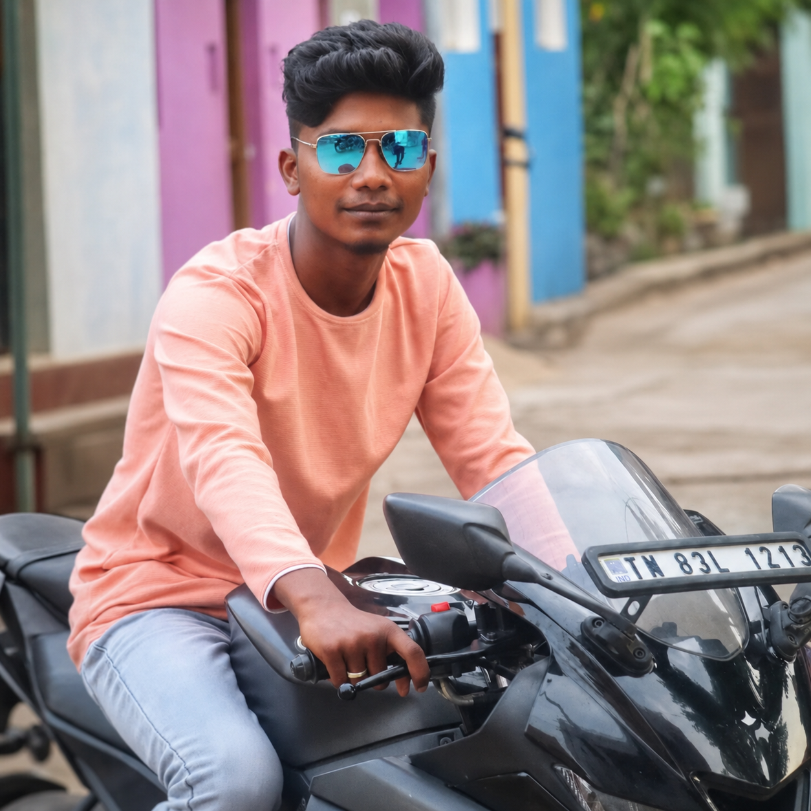
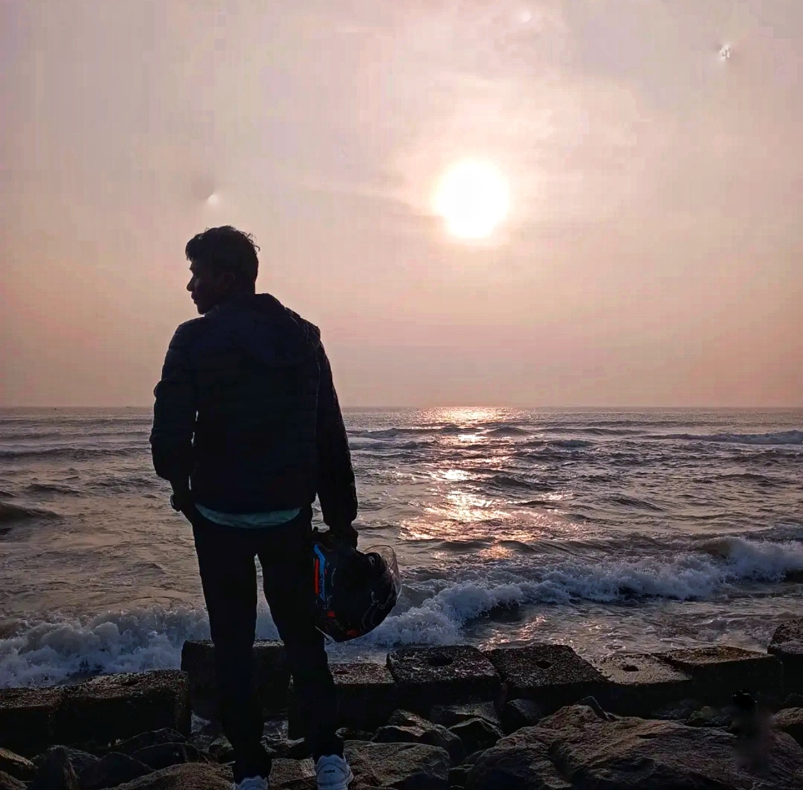
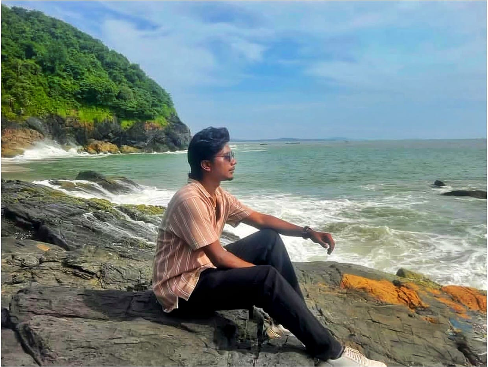

RIDE DIARIES

The Peaceful Gateway to Electronic City
Where every roads holds a new story, CHandapura rides with hustle and Heart. From Sunrise streets to midnight vibes, Bangalore's spirit begins here.

Ambur Rides with Legacy
Pride of TamilNadu: In the heart of Ambur, Flavors meet tradition, Where every street carries a timeless story. Proud soul of Tirupattur, Rich in culture and Pride. Tamilnadu's Warmth lives here forever...

Pondy's Perfect Promenade
Where French charm meets Indian shores, Rock Beach sands as the ultimate coastal sanctuary. Le the rhythm of crashing waves against timeless boulders wash away your worries on Puducheery's iconic Promenade.

The Green Heaven Land
"The Spectacular 7th Heaven of the Western Ghats. Traverse forty thrilling hairpin bends into a mist- Shrouded sanctuary of endlesss Green tea carpets, Roaring waterfalls and rare majestic wildlife.""

The world's Highest tea Paradise
"Ascend into a breathtaking realm where The world's highest organic tea gardenskiss the sky. Awaken above an endless ocean of clouds, Bathe in the golden glory of an unforgettable sunrise and touch pure mountain magic."

Cascading Peace, Roaring Beauty
WHere the mighty Kaveri splits into two spectacular streams, Leave behind the heavy traffic and the busy city street, Travel down to where the wild waters and the vally meet.

Nature's Hidden Thunder
The Rugged road leads to the purest rush. Ride beyond roads, Discover Hebbe Falls where the mountains whisper and waterfalls roar.

Coastal Ride to Gokarna
Long coastal highways, sea breeze and peaceful sunsets. This ride was all about freedom, slow roads and soulful moments.

A Clear View Of Nature's Heart
"Walking into the heart of Wayanad feels like entering a dream". Heartbeats racing over depths unknown, A Sky-High path where the wild is shown, Wayanad's thrill on a bridge of its own.